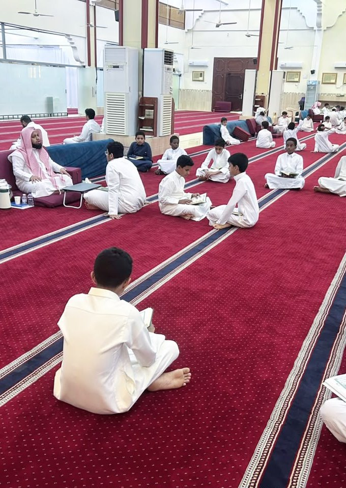
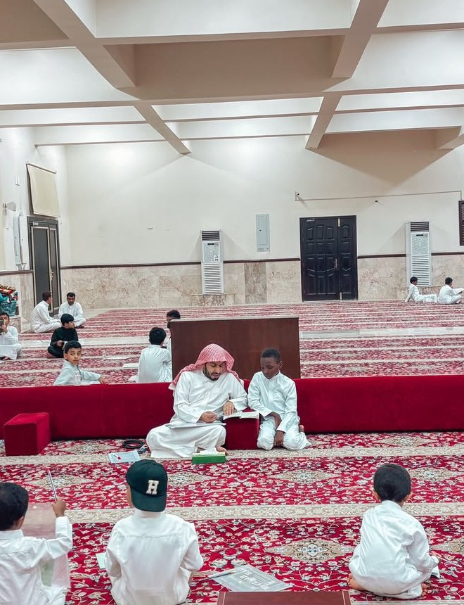
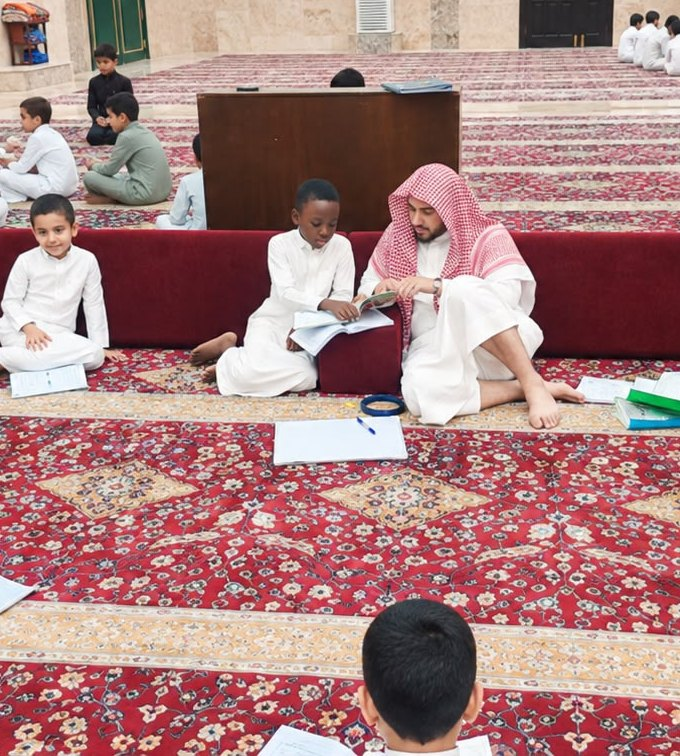

﴿إِنَّ هَٰذَا الْقُرْآنَ يَهْدِي لِلَّتِي هِيَ أَقْوَمُ﴾
مقترح مشروع · مسار المنح النوعي · مجال القرآن
المجمعات القرآنية
أربعة مجمعات قائمة ومرخّصة تحتضن 28 حلقة و513 طالباً، نطلب دعم تشغيلها ثمانية أشهر دراسية.
- 4مجمعات
- 28حلقة
- 513طالباً
- 8أشهر
مقدَّم إلى مؤسسة سليمان أبانمي الأهلية
العام الدراسي 1448هـ
الملخص التنفيذي
المشروع في صفحة واحدة
تشغيل أربعة مجمعات قرآنية في جوامع أحياء ينبع، يديرها مديرون متفرغون، ويُوزَّع طلابها على مسارات حسب المستوى، بقياس قبلي وبعدي للأثر.
513 طالباً من طلاب المراحل الدراسية في 28 حلقة، وأسرهم شركاء في المتابعة.
ثمانية أشهر دراسية، حضورياً في جوامع أبي عوف وابن تيمية وابن عثيمين والسلام.
32,000 وجه حفظ جديد، و18 خاتماً للقرآن الكريم، و80 مبتدئاً يتقنون القراءة الصحيحة.
المبلغ المطلوب
308,000
ريال سعودي
600 ريال للطالب في الفترة كلها
أي 75 ريالاً في الشهر
ويمكن دعم مجمع واحد بمبلغ يتراوح بين 69,000 و85,000 ريال
عن الجمعية والمشروع
جمعية راسخة ومشروع واضح الوجهة
رؤية المشروع
الريادة في إعداد جيل قرآني متقن، معتز بقيمه، ومؤثر في مجتمعه.
رسالة المشروع
تقديم بيئة تعليمية محفزة لتعليم القرآن الكريم حفظاً وتلاوة وتدبراً، من خلال حلقات متقنة وإشراف تربوي متميز.
3165
رقم الترخيص
لدى المركز الوطني لتنمية القطاع غير الربحي
262
حلقة
في المحافظة وقراها
+4,000
طالب وطالبة
في حلقات الجمعية ودورها النسائية
25
كافلاً
من أهل الخير يكفلون حلقات الجمعية في 1448هـ
المشكلة والحاجة
حلقات قائمة يهددها انقطاع الكفالة
تعمل المجمعات الأربعة في جوامع أحياء مكتظة بالطلاب، وأقدمها منذ 1437هـ. وتكلفتها الأساسية مكافآت المعلمين والمديرين، وهي التزام شهري لا تغطيه موارد الجمعية الذاتية. وانقطاع الكفالة شهراً واحداً يوقف الحلقة ويُفقد الطلاب انتظامهم، وهو ما لا يُستعاد بسهولة.
18
طالباً في الحلقة
متوسط كثافة الحلقات في المجمعات الأربعة
الفئة المستهدفة
طلاب المراحل الدراسية في أحياء ج16 وج21 والهجاري والعمودي.
مجمعات مرخّصة
لكل مجمع تصريح افتتاح معتمد من مجلس إدارة الجمعية.
ما نطلبه
كفالة التشغيل ثمانية أشهر، مع أدوات قياس تُثبت أثر كل ريال.
التوافق مع الأولويات
مشروع يخدم أولويات المؤسسة والجمعية
مؤسسة سليمان أبانمي
مجال القرآن في المسار النوعي
تعليم القرآن الكريم حفظاً وتلاوة وتجويداً، بقياس موثق للأثر وتقارير دورية.
الخطة الاستراتيجية للجمعية
تحقيق الاستدامة في تحفيظ القرآن
يخدم مؤشر «عدد المجمعات القرآنية» الذي تستهدف الجمعية رفعه إلى ستة مجمعات في 2027م.
دليل برامج الجمعية 1448هـ
55% من تكلفة البرنامج
تكلفة برنامج الحلقات بالمجمعات والمساجد 557,819 ريالاً، والمطلوب هنا 308,000 ريال.
رؤية المملكة 2030
تعزيز القيم وأثر القطاع غير الربحي
غرس القيم الإسلامية في النشء، وتمكين الجمعيات الأهلية من أثر أعمق في المجتمع.
المجمعات الأربعة
حلقات راسخة في أربعة أحياء من ينبع
| المجمع | الحي | سنة الافتتاح | الحلقات | الطلاب | أوقات الحلقات |
|---|---|---|---|---|---|
| مجمع جامع أبي عوف | ج16 | 1437هـ | 8 | 120 | من العصر إلى العشاء |
| مجمع جامع ابن تيمية | ج21 | 1437هـ | 7 | 154 | من العصر إلى المغرب |
| مجمع جامع ابن عثيمين | الهجاري | 1439هـ | 7 | 140 | من العصر إلى المغرب |
| مجمع جامع السلام | العمودي | 1446هـ | 6 | 99 | من العصر إلى العشاء |
| الإجمالي | 28 | 513 |
سنة الافتتاح من تصاريح افتتاح المجمعات الصادرة عن مجلس إدارة الجمعية.
منجزات قائمة
حصاد فصل دراسي واحد في 1447هـ
14,880
وجه حفظ
حفظ جديد للطلاب
35,840
وجه مراجعة
تثبيت لما حُفظ
40
خريجاً
من القاعدة المدنية للمبتدئين
36
نشاطاً
تربوياً وتحفيزياً
8
خاتمين
للقرآن الكريم كاملاً
من إحصائيات المجمعات للفصل الدراسي الحالي 1447هـ، وهي خط الأساس لمؤشرات المشروع.
القيمة النوعية
أكثر من حلقات: نظام تعليمي يُقاس
مسارات حسب المستوى
القاعدة المدنية للمبتدئين، ثم حلقات التأسيس، فالمتميزين، فالحفاظ. وينتقل الطالب بالاختبار لا بالعمر.
قياس قبلي وبعدي
اختبار لتحديد المستوى في البداية، واختبارات كل شهرين، واختبار ختامي يقيس التحسن في الحفظ والتلاوة.
رافد للبرامج النوعية
يُرشَّح المتميزون لبرنامج فتية المحراب والمسابقات المحلية وحلقة الإجازة.
شراكة مع الأسرة
تقرير شهري لولي الأمر بالحفظ والحضور، فيصبح البيت شريكاً في المتابعة.
من الحلقات
حلقات قائمة تحتاج من يكفلها


أهداف المشروع
ستة أهداف تُقاس خلال ثمانية أشهر
انتظام 500 طالب فأكثر بنسبة حضور لا تقل عن 85%.
حفظ 32,000 وجه جديد، ومراجعة 75,000 وجه.
تخريج 18 خاتماً للقرآن الكريم كاملاً.
تأسيس 80 مبتدئاً في القراءة الصحيحة بالقاعدة المدنية.
تحسين درجات التلاوة والتجويد 15% بين الاختبارين القبلي والبعدي.
ترشيح 40 طالباً متميزاً للمسابقات القرآنية وبرنامج فتية المحراب.
الخطة الزمنية
ثمانية أشهر من الاختبار القبلي إلى التكريم
ويُرفع التقرير الختامي بالمنجزات والمستندات المالية خلال شهر من انتهاء المشروع.
الميزانية
ثلاثة أرباع المنحة مكافآت للمعلمين
المبلغ المطلوب
308,000
ريال سعودي
600 ريال للطالب
75 ريالاً في الشهر
| البند | العدد | قيمة الوحدة | الشهري | الإجمالي |
|---|---|---|---|---|
| مكافآت معلمي الحلقات | 28 حلقة | 1,000 | 28,000 | 224,000 |
| مكافآت مديري المجمعات | 4 مديرين | 2,000 | 8,000 | 64,000 |
| حوافز شهرية للمتميزين | 4 مجمعات | 200 | 800 | 6,400 |
| جوائز الخاتمين | 18 خاتماً | 500 للخاتم | — | 9,000 |
| حفل التكريم والدروع | — | — | — | 4,600 |
| الإجمالي | 36,800 | 308,000 |
محسوبة على الحلقات الفعلية ومدة الدراسة البالغة ثمانية أشهر، وقيمة الوحدة شهرية عدا جوائز الخاتمين. وتتحمل الجمعية المواقع والتجهيزات والمصاحف.
خيار الدعم الجزئي
يمكن كفالة مجمع واحد أو أكثر
| المجمع | مكافآت الحلقات | مكافأة المدير | الجوائز | التكلفة (ريال) |
|---|---|---|---|---|
| مجمع جامع أبي عوف | 64,000 (8 حلقات) | 16,000 | 5,000 | 85,000 |
| مجمع جامع ابن تيمية | 56,000 (7 حلقات) | 16,000 | 5,000 | 77,000 |
| مجمع جامع ابن عثيمين | 56,000 (7 حلقات) | 16,000 | 5,000 | 77,000 |
| مجمع جامع السلام | 48,000 (6 حلقات) | 16,000 | 5,000 | 69,000 |
| الإجمالي | 224,000 | 64,000 | 20,000 | 308,000 |
يُخصَّص المبلغ المعتمد لمجمع بعينه بمركز تكلفة مستقل وتقرير خاص به.
مجمع كامل
حلقاته ومديره وجوائز طلابه في منحة واحدة.
أثر يُنسب للمانح
لوحة باسم المؤسسة في المجمع المدعوم.
تقرير مستقل
منجزات المجمع ومصروفاته في تقرير خاص به.
مؤشرات الأداء
مستهدفات تتجاوز أداء 1447هـ
| المؤشر | خط الأساس 1447هـ | المستهدف | أداة التحقق |
|---|---|---|---|
| الطلاب المنتظمون | 513 | 500 فأكثر | كشوف الحلقات |
| نسبة الحضور | تُقاس في الشهر الأول | 85% فأكثر | سجل الحضور |
| أوجه الحفظ الجديد | 14,880 | 32,000 | سجل الحفظ |
| أوجه المراجعة | 35,840 | 75,000 | سجل المراجعة |
| الخاتمون للقرآن الكريم | 8 | 18 | محاضر الاختبار |
| خريجو القاعدة المدنية | 40 | 80 | كشوف القاعدة المدنية |
| تحسن درجات التلاوة | الاختبار القبلي | +15% | الاختبار البعدي |
خط الأساس لفصل دراسي واحد، والمستهدف لفصلين، أي ما يزيد على ضعف خط الأساس.
الحوكمة
كل ريال له أثر مُوثَّق
يعتمد مجلس إدارة الجمعية المشروع وميزانيته قبل التنفيذ.
للمشروع كله، ولكل مجمع عند الدعم الجزئي.
تُصرف المكافآت شهرياً بتحويل بنكي مقابل كشوف حضور معتمدة.
زيارة إشرافية أسبوعية لكل مجمع، ومحضر لكل اختبار.
إبراز هوية المؤسسة في المجمعات والمطبوعات وحفل التكريم.
تقارير المؤسسة
- تقرير مرحلي في الشهر الرابع: المنجزات والمصروفات.
- تقرير ختامي خلال شهر من الانتهاء: النتائج والمستندات المالية.
- زيارة ميدانية متاحة لممثل المؤسسة في أي وقت.
المخاطر والاستدامة
خطة لما قد يتعثر، ولما بعد المنحة
| الخطر | المعالجة |
|---|---|
| انقطاع معلم أو اعتذاره | معلم احتياط لكل مجمع من خريجي برنامج إعداد المعلمين. |
| تراجع الحضور في مواسم الاختبارات | جدول مرن في الاختبارات وشهر رمضان، وحوافز شهرية للحضور. |
| تأخر صرف المكافآت | مركز تكلفة مستقل، وصرف شهري بالتحويل البنكي. |
كفالة الحلقات
تُدرج المجمعات في برنامج كفالة الحلقات لدى الجمعية بعد المنحة.
شراكة الجوامع
المواقع والخدمات من الجوامع دون تكلفة على المشروع.
كوادر مستدامة
المعلمون المؤهلون والمتميزون المرشَّحون يبقون رصيداً للجمعية.
شاكرين لكم دعمكم لأهل القرآن
حساب الجمعية (الشؤون التعليمية) – مصرف الراجحي: SA9780000327608010750004
رئيس مجلس الإدارة: د. سلامة بن سليم الرفاعي
مسجلة لدى المركز الوطني لتنمية القطاع غير الربحي برقم 3165